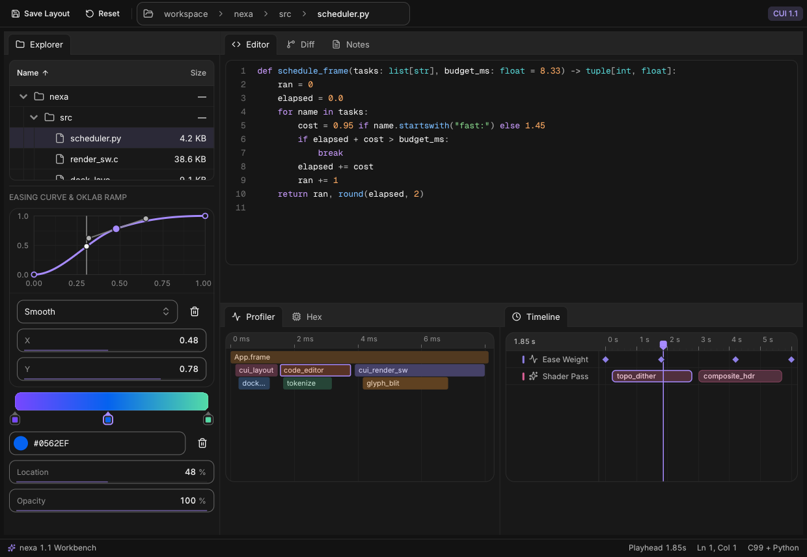

Native UI components for Python
Spring motion, full keyboard control, and 160+ finished desktop components—powered by one zero-dependency C99 engine in an ~820 KB native library.
pip install nexa

- 160+components
- 660 KBminimal LTO core
- < 0.25 mslayout & draw pass
- Win · Mac · LinuxOpenGL & SIMD SW
- 0runtime dependencies
Everything a desktop app needs
Not a box of primitives: 160+ cohesive components across 20 domains—multi-split docking workspaces, code & diff editors, tree tables, flame profilers, timelines, charts, and AI streams—ready out of the box.
Explore all 160+ components →Dockspace & IDE Chrome New in 1.1
Interactive drag-to-dock split panes, serializable layouts, menu bars, toolbars, editable path bars & dirty document tabs.
Code, Diff & Markdown New in 1.1
Multi-line syntax code editor with undo & find, split/inline Myers diff viewer with word highlights, and CommonMark + GFM.
Studio, Hex & Timeline New in 1.1
Profiler flame graphs, binary hex editor, Bezier curve & OKLab gradient editors, NLE clip timelines & node graphs.
Data Grids & Tree Tables 1M+ rows
Virtualized hierarchical tree tables, priority-responsive editable data grids, filter bars, KPIs, treemaps & Sankey diagrams.
16 Native Chart Types Charts
Smooth cubic area/line charts, stacked bars, scatter plots, donuts, radar charts, funnels, activity rings & sparklines.
AI, Asyncio & Threading GIL-Free
Streaming chat & voice orb paired with BackgroundRunner, AsyncBridge, Channel[T], LogBuffer & app.wake().
Your interface is plain Python
Every widget is a function or with scope that draws itself and returns plain Python values. Start with a 20-line functional closure, pass explicit procedural state, or scale into isolated Component, View, and Router classes.
Make it yours
Light and dark themes, eight calibrated perceptual OKLCH accents, and 34 semantic tokens your own custom canvas drawing follows automatically. Click any swatch to recolor this page live.
Theming & custom brand tokens →accent=ui.Accent.VIOLET # #a78bff (dark mode)Small, fast and careful
Native Python desktop apps should open instantaneously, sleep at 0% CPU when idle, support optional BiDi & Arabic shaping, and run identically inside headless Linux CI containers without Xvfb.
Custom GPU backends, --rtl & LTO builds →-
0% idle CPU
Releases the Python GIL while sleeping on OS window events and wakes only on input, springs, or
app.wake(). -
Sub-MB native core
Includes all 160+ C99 widgets, OpenGL 3.3 + SIMD software renderer, Inter, Geist Mono, and 168 Lucide icons.
-
Headless pytest ready
Pass
headless=Trueor setNEXA_HEADLESS=1to drive synthetic inputs and capture pixel-exact PNGs in CI. -
BiDi & BYO GPU
Enable UAX #9 BiDi & Arabic OpenType shaping via
--rtl, or feedDrawDatainto Vulkan, Metal, or DX12.
Step-by-step tutorials
Seven hands-on chapters—every snippet tested in CI—take you from your first window to complete Functional/Procedural and Object-Oriented desktop apps, async worker streams, and standalone binaries.
Open Tutorials Hub →- 00 · COMPLETE 0 → HERO MASTERCLASS (11 MODULES · 11 RUNNABLE APPS) Zero to Hero: The Complete nexa Full Tutorial Go from installing nexa and opening a 15-line native window all the way to architecting, testing, and freezing Pulse Studio—covering Flexbox/Grid layouts, every form & picker, chrome, 50k virtualized grids, code & diff editors, studio canvases, OOP Router/Store, OKLCH theming, and streaming worker pools. Start the full 0 → Hero course →
- 01 · START HERE Getting started Install nexa, open your first native window, and master value-returning widgets & ID scopes. Start tutorial →
- 02 · TUTORIAL Functional & Procedural Build closures with ui.run(draw), flexbox shells, overlays, and a full Personal Budget Tracker. Start tutorial →
- 03 · TUTORIAL Object-Oriented (OOP) Structure multi-screen apps with Application, Component, View, Router, Store & an Incident Console. Start tutorial →
- 04 · TUTORIAL Theming, Accents & Icons Light & dark mode, all 8 OKLCH accents, 34 theme tokens, custom .ttf fonts, and 168 Lucide icons. Start tutorial →
- 05 · TUTORIAL Concurrency & Asyncio Stream background tasks, threads, Channel[T], LogBuffer, and asyncio coroutines at 60fps. Start tutorial →
- 06 · TUTORIAL Canvas, GPU & Packaging Vector canvas, headless pytest PNG checks, custom GPU backends, --rtl shaping & PyInstaller/Nuitka. Start tutorial →
- 07 · REFERENCE 160+ Components Reference Complete Python signatures, result types, and scope rules across all 20 built-in widget domains. Browse API →
Start with one window
Install nexa, open a native window, and draw your first Python components in a few minutes.